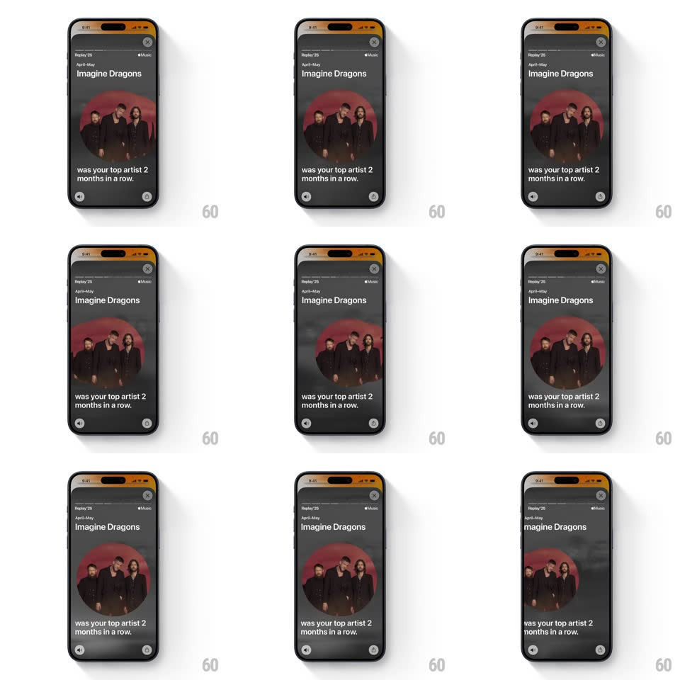

Media
Frame-by-frame

Rebuild this animation 1:1: Apple Music Replay '25's artist scene - a circular artist photo floats slowly over a dark morphing gradient, with the Replay header and the "top artist 2 months in a row" copy holding still.

Rebuild this animation 1:1: Apple Music Replay '25's artist scene - a circular artist photo floats slowly over a dark morphing gradient, with the Replay header and the "top artist 2 months in a row" copy holding still.
## Integration
Integration: stack-agnostic spec - springs given as stiffness/damping, timed motions as duration + curve; map every value to your framework and animation library of choice.
## Scene
A Replay '25 story screen: an orange-tinted top edge, "Replay '25" and the Apple Music logo, a month range ("April-May") over the artist name ("Imagine Dragons") in large type, a big circular band photo floating mid-screen, and the payoff line "was your top artist 2 months in a row." below. Share and mute buttons anchor the bottom corners.
## Motion spec
Pattern: ambient floating artist photo over a morphing gradient, horizontal slide transitions between scenes.
- The background gradient (deep red, smoke gray, ember orange) morphs continuously - soft blobs drifting and cross-blending over ~12s loops, heavily blurred, always dark enough for white type.
- The circular photo floats: a slow drift (+/-10px x, +/-14px y, 8s ease-in-out loops, offset phases) with a faint scale breathe (1 -> 1.03, 6s) - a held note, not a dance.
- The artist name and copy stay locked - the photo and gradient supply all the motion.
- Scene changes ride a horizontal slide: the whole scene (photo, type, gradient) slides left and out while the next slides in from the right (450ms, ease-out), header persistent.
- On entry the photo scales 1.15 -> 1 with a slow settle (600ms, ease-out) as the gradient crossfades to the new palette.
## Calibration
- Everything is slow - Replay is contemplative where Wrapped is loud; no springs, no staggers.
- The photo's circle mask is perfect and crisp - the float must never reveal an edge.
## Reduced motion
Static gradient; photo still; scenes crossfade (300ms).
## Don't miss
- The copy credits consecutive months ("2 months in a row") - the streak is the stat.
- The orange tint bar at the very top is the Replay '25 signature - keep it on every scene.